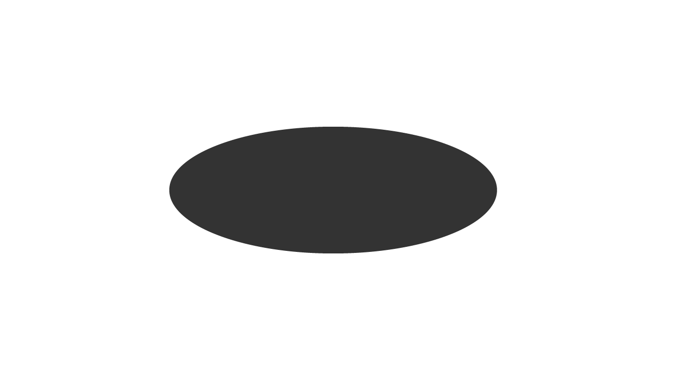
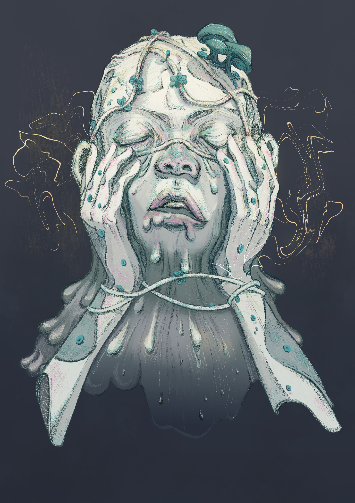
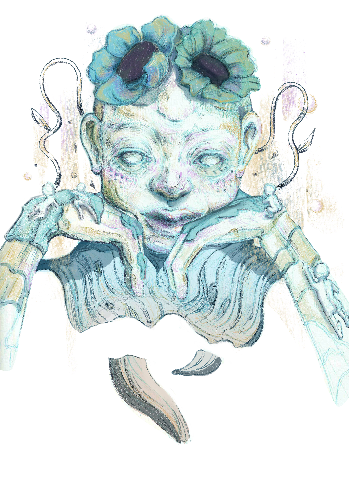
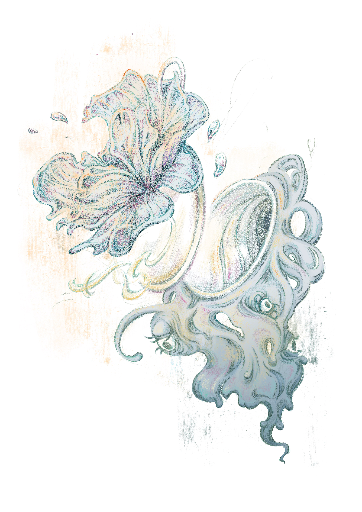
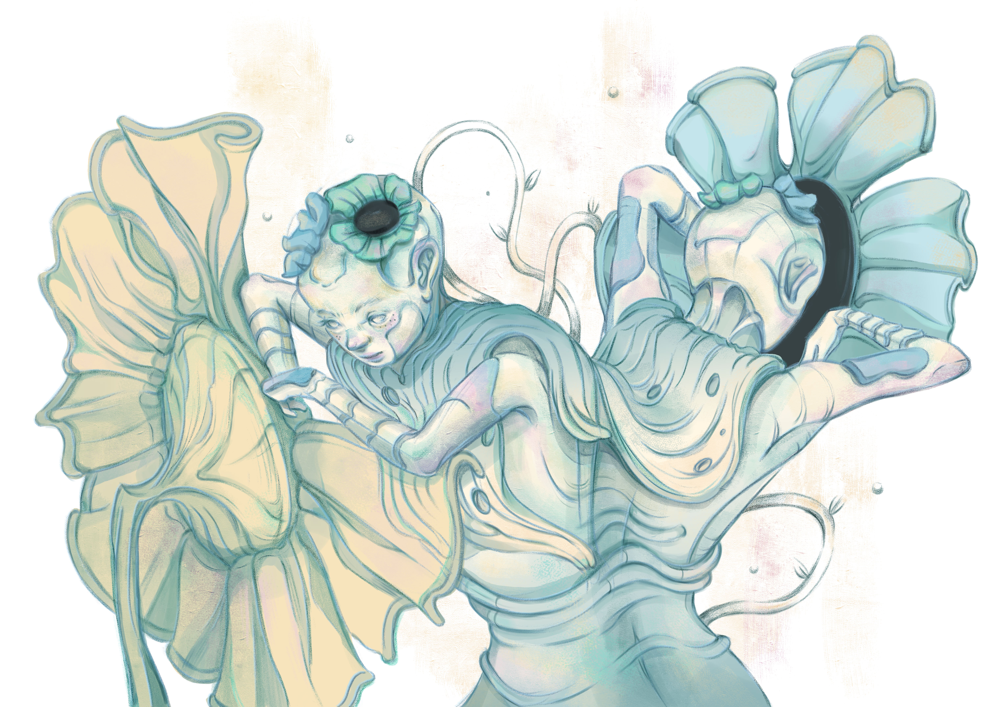
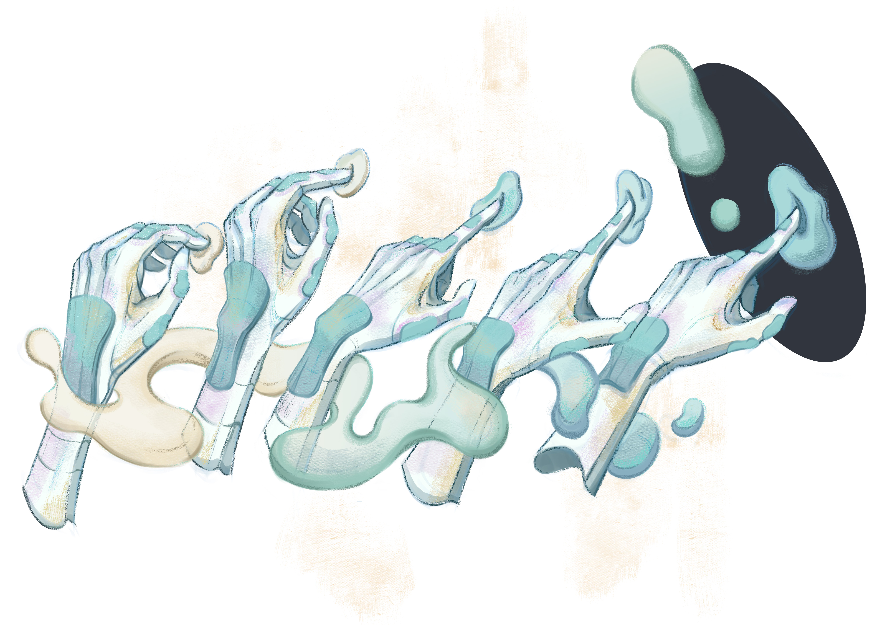
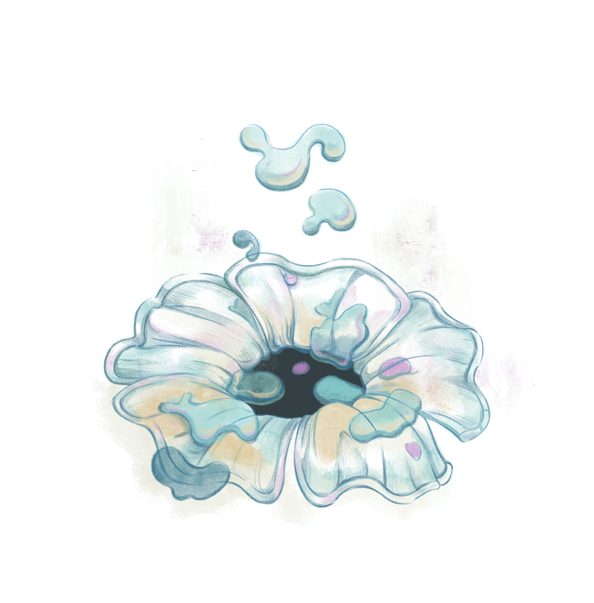
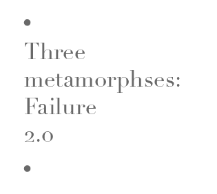

1.1
面對着深淵，
Abyss ahead, what meets the naked eyes ?
有人說：「它深不可測得令人懼怕。」
Some sees endless depth of hollowness.

1.2
有人卻回應道：「這是一個純黑的圓。」
Some sees only pitch black.

1.3
深淵道：
The Abyss imperturbably utters
「你們選擇如何想象我，我就會成為什麼。」
“I am what you choose to see.”

1.4
我們都是會到處尋找和創造意義的人類，
Humans seek and create meaning,
儘管眼前只有黑， 都會嘗試找出黑暗的意義。
Even in face of sheer darkness.

1.5
一旦墮入深淵，深怕墜落的人，
Those who fears darkness,
就會看着眼前的黑暗，
succumbs to it
期望着墜落的停止。
and frivolously hopes to see light.
1.6
而想象它是純黑的圓的人，會駕馭深淵，
Those who dares to create meaning, overcomes
選擇在上面填上其他色彩，直至看不到黑暗的邊界。
and colours it studiously until darkness is vanquished.

1.7
對深淵的想象並無落在任何必然上，
Perception of the abyss, is in no way definitive,
你可以選擇視它為無底洞，
it can be an endless depth of hollowness,
也可以選擇視它你創造的基石。
but it can also be your pitch-blackboard that awaits art.


挫敗總是會以不同形式和面貌找上自己，那你賦予深淵的定義是什麼？
Failure visits, what meets your naked eyes?